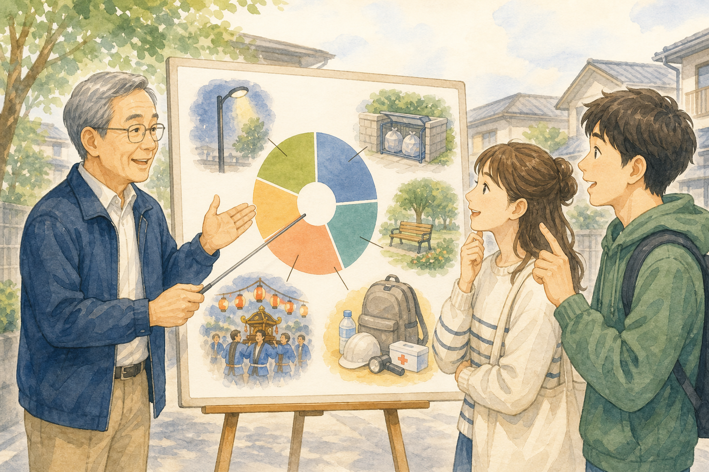
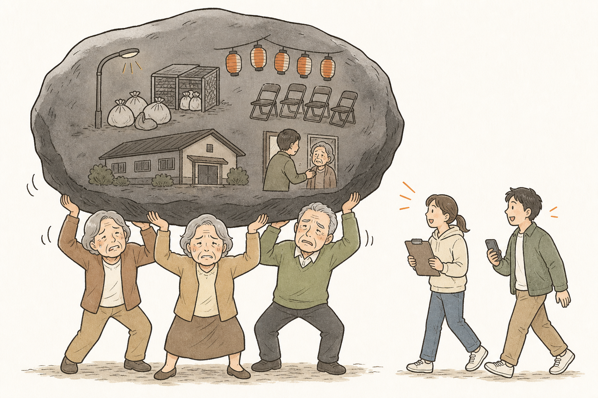
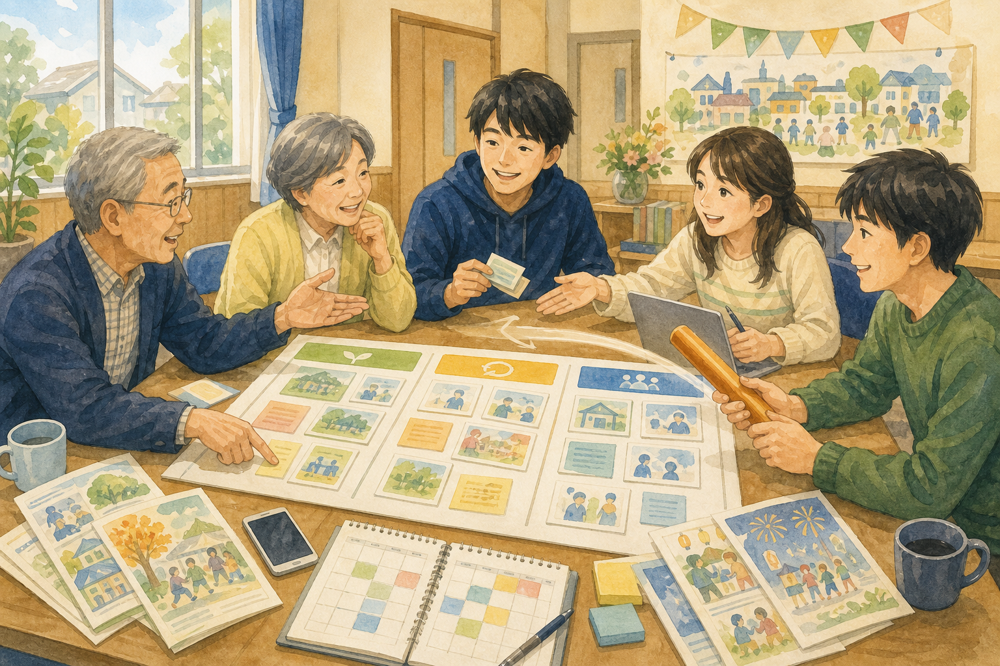
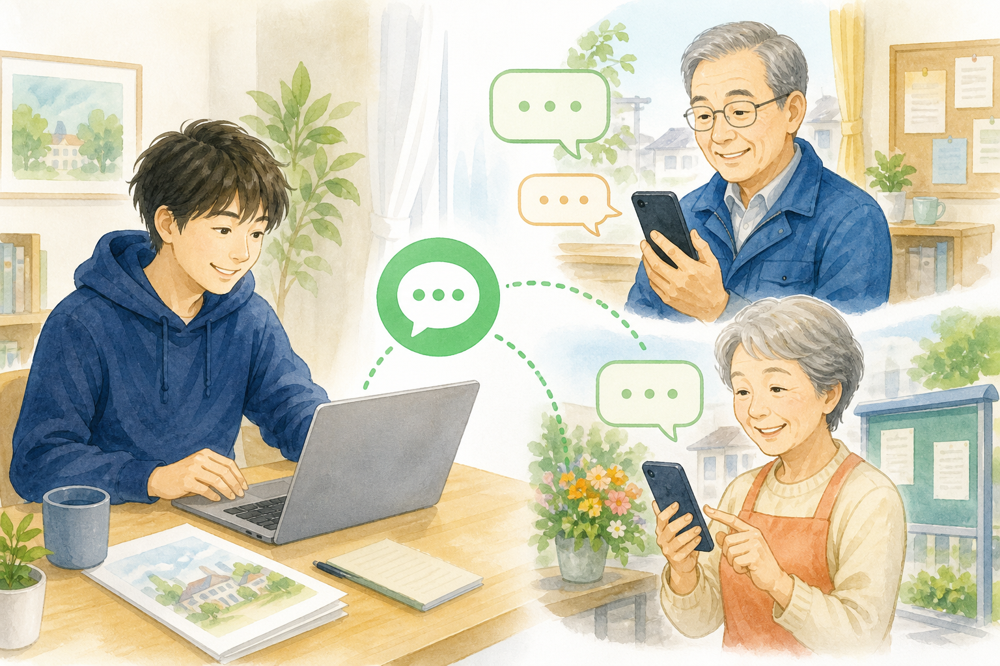
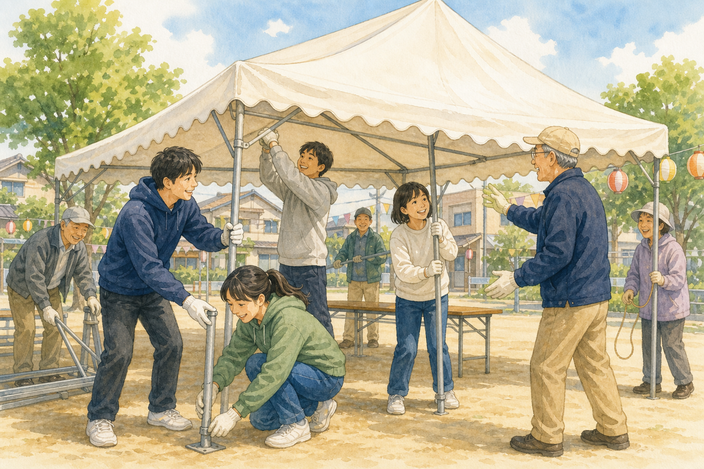
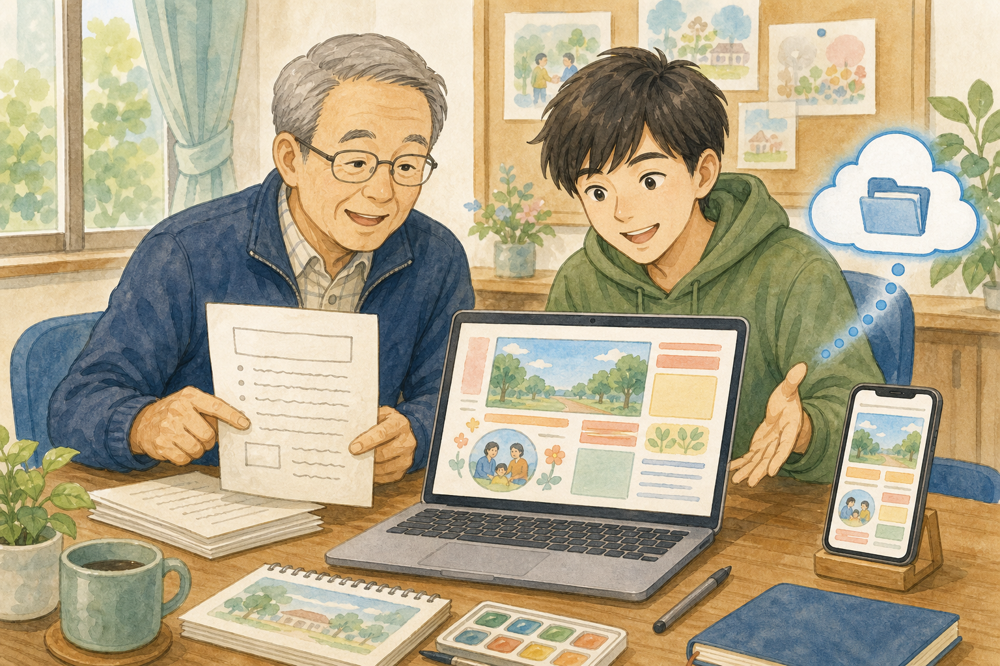
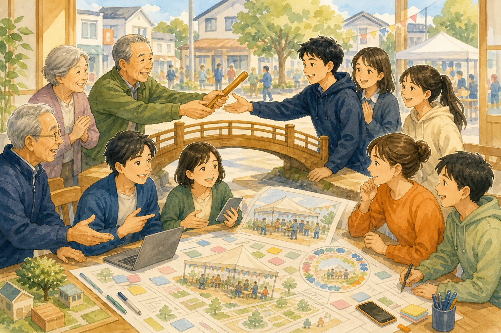

01
見える
活動、会費、年間行事、困りごとをわかりやすく可視化。まずは町内会を「知る」入口をつくります。
ABOUT DEJIKATSU TEAM
OTARU COMMUNITY UPDATE PROJECT
デジ活チームは、小樽の町内会・地域住民・若者が一緒に、地域の困りごとを見つめ直し、これからも続けられる地域コミュニティをつくるプロジェクトです。
私たちの取り組み ↓
01 / WHAT IS DEJIKATSU?

町内会は、防災・防犯・見守り・住民同士の交流を支える、暮らしにいちばん近い組織です。しかし、役員の高齢化と人数の減少により、街路灯やごみステーションの管理、祭りやイベント、地域の見守り、会館の維持などを担い続けることが難しくなっています。近い将来、解散を選ばざるを得ない町内会が出ることも考えられます。デジ活チームは、町内会のデジタル化を入口に、役員の負担を減らし、新しい人が関わりやすい仕組みを地域とともに考え、実践します。
02 / WHY NOW?
小樽では人口減少と高齢化が進み、町内会も担い手不足や業務の偏りという課題に直面しています。これまでと同じ方法だけでは、地域を支える活動を続けにくくなっています。
だからこそ、回覧板を電子回覧板に変えたり、SNSで活動を発信したりする前に、まず役員が町会業務を棚卸しします。地域に残すべき仕事と見直す仕事を整理し、若者の意見も取り入れながら、若者自身が挑戦したい役割を選べるようにする。次世代へスムーズにバトンタッチできる仕組みに転換します。

03 / OUR THREE PRINCIPLES

活動、会費、年間行事、困りごとをわかりやすく可視化。まずは町内会を「知る」入口をつくります。
若者や地域の人が、得意なことから参加できる場へ。「手伝い」ではなく対等な共創を目指します。

情報共有や業務を整理し、役員の負担を軽減。引き継ぎやすく、無理なく続く運営に変えていきます。
04 / DIGITAL SUPPORTERS
「いきなり役員になって！」では、はじめの一歩のハードルが高くなります。デジ活チームでは、1日だけのイベントのお手伝いや、自宅でもできる回覧板のデータ作成など、ちょっとした作業から地域とつながれます。

01 / EVENT SUPPORT
高齢の役員だけでは大変なテント張りも、若者が加わることでぐっと楽に。1日だけの参加でも、地域の力になります。

02 / DESIGN & SHARE
手書きや文字中心の回覧板を、写真やイラストを生かしたデザインへ。データとして保存し、SNSからも届けられます。
05 / YOUTH AS CO-CREATORS
地域の未来を担うのは若者たち。地域を守ってきたのは役員たちです。デジ活チームは、その経験とアイデアをつなぎ、役員から若者へ未来を託すための架け橋になります。

THE IDEAL COMMUNITY
若者が主体的に「町内会のカタチ」を真剣に考え、役員はそのカタチが実現できるように応援する。防災や見守りなど町内会が大切に担うことと、若者が挑戦したい広報・デザイン・イベントづくりを重ねることが、これからの理想の地域コミュニティです。
06 / FOR EVERYONE
スマホに不慣れな方を置き去りにせず、電話や紙なども大切にしながら進めます。長年地域を支えてきた人の経験を尊重し、誰もが安心して参加できる町内会を目指します。
まずは、地域のことを知るところから。